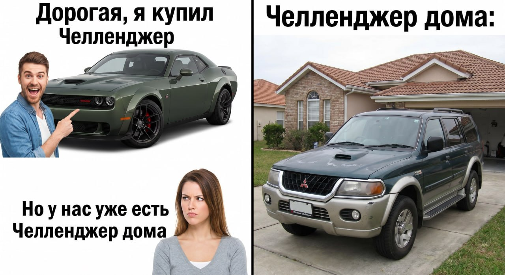

Три AI-инструмента, без которых ты не представляешь свой рабочий день в 2026 году?
Каждый день я использую разные LLM для разных задач. К примеру, Gemini помогает мне с выверением стилистических ошибок в текстах и пруфридинге в целом, генерации треков, брейншторминге при создании дизайн-концептов, подготовке заданий для коучинга. ChatGPT неплох для структуризации информации. Nano-banana и gpt-image отлично генерят картинки, и это я использую как в работе, так и для мемов.
![made with gemini-3.1-flash-image-preview (nano-banana-2) [web-search]. Владислав выступил главным героем мема](../assets/images/blog/ai-future-blitz-img-4d650578.png)
В последнее время генерю себе собственные референсы из головы для артов — визуализировать свои мысли так намного проще, чем искать картинки в гугле. ElevenLabs — одна из моих любимых платформ, где меня перманентно забанили (а потом и разбанили) по айпи со всех аккаунтов. Но об этом как-нибудь в другой раз поподробнее: расскажу про свой опыт запуска каналов на ютубе. Сейчас начала активно пользоваться агентами для вайбкодинга. Что я делаю? Да на самом деле все, что приходит в голову. Из последнего: личный сайт-портфолио, рофлоигра Kobyla has waken up (не спрашивайте что это), мои личные аппки для контроля и трека задач + сайд проектов. Это из основного. Оффтоп: всем рекомендую початиться с Hunyuan-AI, дабы узнать больше про Китай.

Самый главный миф про нейросети, в который всё ещё верят люди?
Tbh, у меня такое чувство, что в первую очередь сейчас это то, что люди судят о нейросетях по тому нейрослопу, который им попадается в формате коротких видео. Из-за нахождения в своем собственном информационном пузыре может начать складываться мнение, что только на такое AI и способен. Но ведь, на мой взгляд, кристально понятно, что это далеко не так. Кстати, те видосы, которые я делала на ютуб шортс, были от и до сгенерены LLM еще на момент 2025. Но ни разу в этом я уличена не была, хотя видосы суммарно набрали около полумиллиона просмотров. Вывод: все дело не в том, КАКОЙ инструмент используется, а в том, КТО его использует. Хотя, безусловно, хороший инструмент позволит сделать результат еще лучше.

Если бы нужно было дать один совет человеку с гуманитарным образованием, который боится идти в IT или продуктовый дизайн — что бы ты сказала?
Я бы посоветовала сильно задуматься, а надо ли вам это вообще. Потому что это далеко не для всех. Я всю жизнь просидела за компом, постигая различные инструменты, общалась по большей части с программистами, с некоторыми из своих друзей буквально параллельно прошла их путь в универе (и даже принимала участие в их проектных практикумах). Поэтому лично для меня это был логичный вектор дальнейшего развития. Будет ли легко тем, кто просил меня уже на пятом курсе оформить им документы в экселе/ворде? Сомневаюсь.